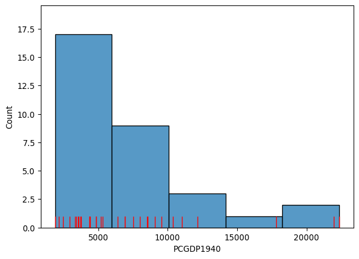
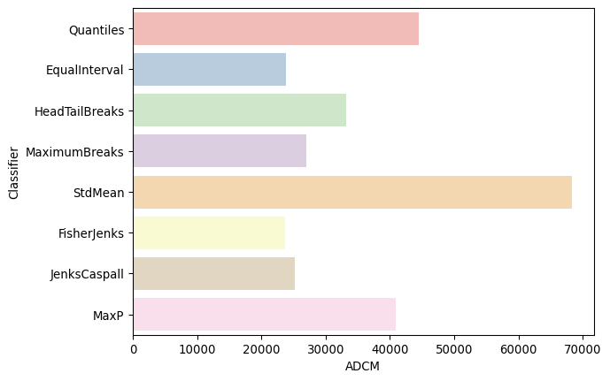
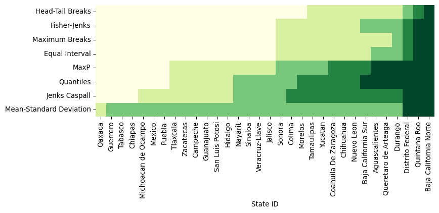
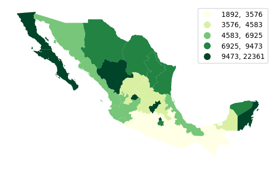
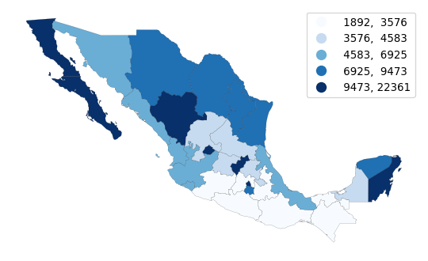
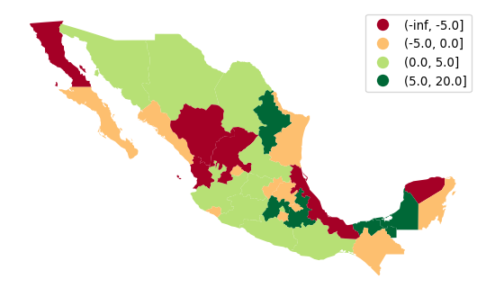
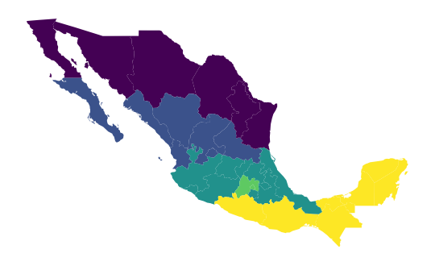
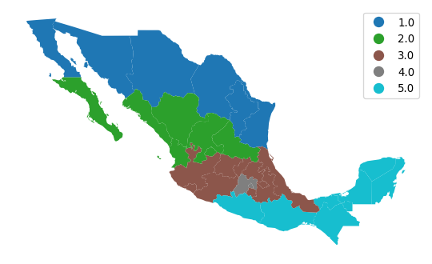
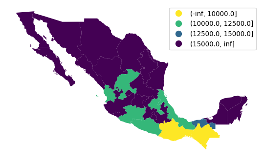
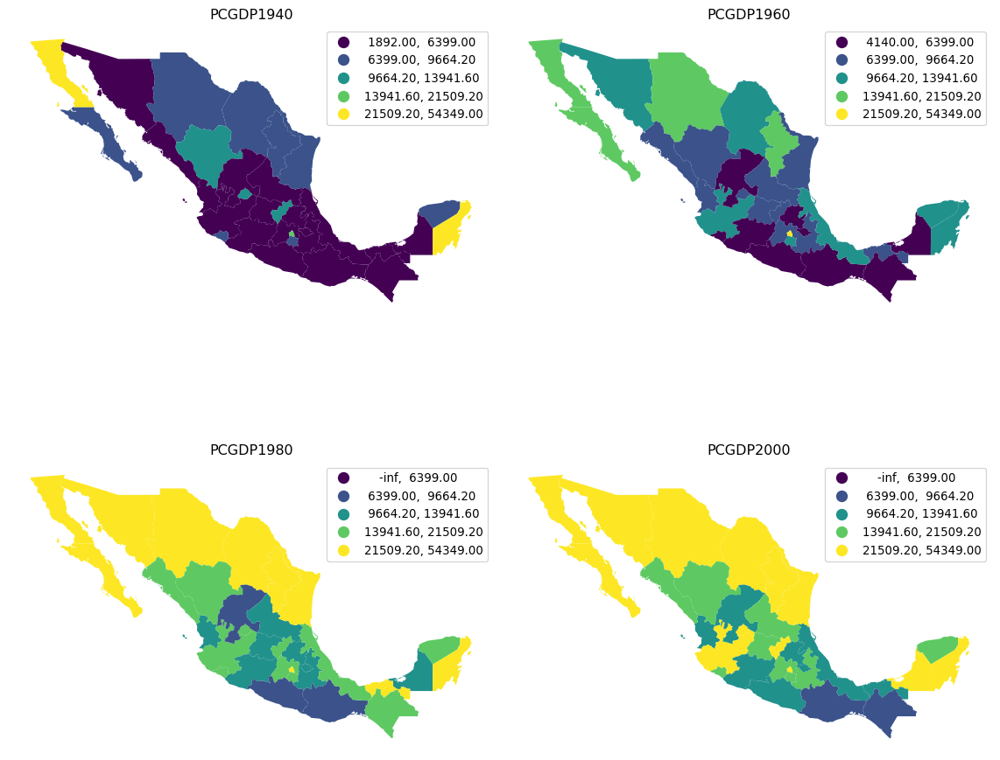

import seaborn
import pandas
import geopandas
import pysal
import numpy
import matplotlib.pyplot as plt7 Choropleth Mapping
Choropleths are geographic maps that display statistical information encoded in a color palette. Choropleth maps play a prominent role in geographic data science as they allow us to display non-geographic attributes or variables on a geographic map. The word choropleth stems from the root “choro”, meaning “region”. Choropleth maps represent data at the region level, and are appropriate for areal unit data where each observation combines a value of an attribute and a geometric figure, usually a polygon. Choropleth maps derive from an earlier era where cartographers faced technological constraints that precluded the use of unclassed maps where each unique attribute value could be represented by a distinct symbol or color. Instead, attribute values were grouped into a smaller number of classes, usually not more than 12. Each class was associated with a unique symbol that was in turn applied to all observations with attribute values falling in the class.
Although today these technological constraints are no longer binding, and unclassed mapping is feasible, there are still good reasons for adopting a classed approach. Chief among these is to reduce the cognitive load involved in parsing the complexity of an unclassed map. A choropleth map reduces this complexity by drawing upon statistical and visualization theory to provide an effective representation of the spatial distribution of the attribute values across the areal units.
7.1 Principles
The effectiveness of a choropleth map depends largely on the purpose of the map. Which message you want to communicate will shape what options are preferable over others. In this chapter we consider three dimensions over which putting intentional thinking will pay off. Choropleth mapping thus revolves around: first, selecting a number of groups smaller than \(n\) into which all values in our dataset will be mapped to; second, identifying a classification algorithm that executes such mapping, following some principle that is aligned with our interest; and third, once we know into how many groups we are going to reduce all values in our data, which color is assigned to each group to ensure it encodes the information we want to reflect. In broad terms, the classification scheme defines the number of classes as well as the rules for assignment; while a good symbolization conveys information about the value differentiation across classes.
In this chapter we first discuss the approaches used to classify attribute values. This is followed by a (brief) overview of color theory and the implications of different color schemes for effective map design. We combine theory and practice by exploring how these concepts are implemented in different Python packages, including geopandas, and the Pysal federation of packages.
7.2 Quantitative data classification
Selecting the number of groups into which we want to assign the values in our data, and how each value is assigned into a group can be seen as a classification problem. Data classification considers the problem of partitioning the attribute values into mutually exclusive and exhaustive groups. The precise manner in which this is done will be a function of the measurement scale of the attribute in question. For quantitative attributes (ordinal, interval, ratio scales), the classes will have an explicit ordering. More formally, the classification problem is to define class boundaries such that
\[ c_j < y_i \le c_{j+1} \ \forall y_i \in C_{j} \]
where \(y_i\) is the value of the attribute for spatial location \(i\), \(j\) is a class index, and \(c_j\) represents the lower bound of interval \(j\). Different classification schemes obtain from their definition of the class boundaries. The choice of the classification scheme should take into consideration the statistical distribution of the attribute values as well as the goal of our map (e.g., highlight outliers vs. accurately depict the distribution of values).
To illustrate these considerations, we will examine regional income data for 32 Mexican states (Rey and Sastré-Gutiérrez 2010) in this chapter. The variable we focus on is per capita gross domestic product for 1940 (PCGDP1940):
mx = geopandas.read_file("../data/mexico/mexicojoin.shp")
mx[["NAME", "PCGDP1940"]].head()| NAME | PCGDP1940 | |
|---|---|---|
| 0 | Baja California Norte | 22361.0 |
| 1 | Baja California Sur | 9573.0 |
| 2 | Nayarit | 4836.0 |
| 3 | Jalisco | 5309.0 |
| 4 | Aguascalientes | 10384.0 |
Which displays the following statistical distribution (in Figure 1).
# Plot histogram
ax = seaborn.histplot(mx["PCGDP1940"], bins=5)
# Add rug on horizontal axis
seaborn.rugplot(mx["PCGDP1940"], height=0.05, color="red", ax=ax);
As we can see, the distribution is positively skewed as is common in regional income studies. In other words, the mean exceeds the median (50%, in the table below), leading to the long right tail in the figure. As we shall see, this skewness will have implications for the choice of choropleth classification scheme.
mx["PCGDP1940"].describe()count 32.000000
mean 7230.531250
std 5204.952883
min 1892.000000
25% 3701.750000
50% 5256.000000
75% 8701.750000
max 22361.000000
Name: PCGDP1940, dtype: float64For quantitative attributes we first sort the data by their value, such that \(x_0 \le x_2 \ldots \le x_{n-1}\). For a prespecified number of classes \(k\), the classification problem boils down to selecting \(k-1\) break points along the sorted values that separate the values into mutually exclusive and exhaustive groups.
In fact, the determination of the histogram above can be viewed as one approach to this selection. The method seaborn.histplot uses the matplotlib hist function under the hood to determine the class boundaries and the counts of observations in each class. In the figure, we have five classes which can be extracted with an explicit call to the hist function:
counts, bins, patches = ax.hist(mx["PCGDP1940"], bins=5)The counts object captures how many observations each category in the classification has:
countsarray([17., 9., 3., 1., 2.])The bin object stores these break points we are interested in when considering classification schemes (the patches object can be ignored in this context, as it stores the geometries of the histogram plot):
binsarray([ 1892. , 5985.8, 10079.6, 14173.4, 18267.2, 22361. ])This yields five bins, with the first having a lower bound of 1892 and an upper bound of 5985.8 which contains 17 observations. The determination of the interval width (\(w\)) and the number of bins in seaborn is based on the Freedman-Diaconis rule (Freedman and Diaconis 1981):
\[ w = 2 * IQR * n^{-1/3} \]
where \(IQR\) is the inter quartile range of the attribute values. Given \(w\), the number of bins (\(k\)) is:
\[k = \dfrac{(max-min)}{w}\]
The choropleth literature has many alternative classification algorithms that follow criteria that can be of interest in different contexts, as they focus on different priorities. Below, we will focus on a few of them. To compute the classification, we will rely on the mapclassify package of the Pysal family:
import mapclassify7.2.1 Equal intervals
The Freedman-Diaconis approach provides a rule to determine the width and, in turn, the number of bins for the classification. This is a special case of a more general classifier known as “equal intervals”, where each of the bins has the same width in the value space. For a given value of \(k\), equal intervals classification splits the range of the attribute space into \(k\) equal length intervals, with each interval having a width \(w = \frac{x_0 - x_{n-1}}{k}\). Thus the maximum class is \((x_{n-1}-w, x_{n-1}]\) and the first class is \((-\infty, x_{n-1} - (k-1)w]\).
Equal intervals have the dual advantages of simplicity and ease of interpretation. However, this rule only considers the extreme values of the distribution and, in some cases, this can result in one or more classes being sparse. This is clearly the case in our income dataset, as the majority of the values are placed into the first two classes leaving the last three classes rather sparse:
ei5 = mapclassify.EqualInterval(mx["PCGDP1940"], k=5)
ei5EqualInterval
Interval Count
----------------------------
[ 1892.00, 5985.80] | 17
( 5985.80, 10079.60] | 9
(10079.60, 14173.40] | 3
(14173.40, 18267.20] | 1
(18267.20, 22361.00] | 2Note that each of the intervals, however, has equal width of \(w=4093.8\). It should also be noted that the first class is closed on the lower bound, in contrast to the general approach defined above.
7.2.2 Quantiles
To avoid the potential problem of sparse classes, the quantiles of the distribution can be used to identify the class boundaries. Indeed, each class will have approximately \(\mid\frac{n}{k}\mid\) observations using the quantile classifier. If \(k=5\) the sample quintiles are used to define the upper limits of each class resulting in the following classification:
q5 = mapclassify.Quantiles(mx.PCGDP1940, k=5)
q5Quantiles
Interval Count
----------------------------
[ 1892.00, 3576.20] | 7
( 3576.20, 4582.80] | 6
( 4582.80, 6925.20] | 6
( 6925.20, 9473.00] | 6
( 9473.00, 22361.00] | 7Note that while the numbers of values in each class are roughly equal, the widths of the first four intervals are rather different:
q5.bins[1:] - q5.bins[:-1]array([ 1006.6, 2342.4, 2547.8, 12888. ])While quantile classification avoids the pitfall of sparse classes, this classification is not problem-free. The varying widths of the intervals can be markedly different which can lead to problems of interpretation. A second challenge facing quantiles arises when there are a large number of duplicate values in the distribution such that the limits for one or more classes become ambiguous. For example, if one had a variable with \(n=20\) but 10 of the observations took on the same value which was the minimum observed, then for values of \(k>2\), the class boundaries become ill-defined since a simple rule of splitting at the \(n/k\) ranked observed value would depend upon how ties are treated when ranking.
Let us generate a synthetic variable with these characteristics:
# Set seed for reproducibility
numpy.random.seed(12345)
# Generate a variable of 20 values randomly
# selected from 0 to 10
x = numpy.random.randint(0, 10, 20)
# Manually ensure the first ten values are 0 (the
# minimum value)
x[0:10] = x.min()
xarray([0, 0, 0, 0, 0, 0, 0, 0, 0, 0, 9, 7, 6, 0, 2, 9, 1, 2, 6, 7])And we will now run quantile classification:
ties = mapclassify.Quantiles(x, k=5)
tiesQuantiles
Interval Count
--------------------
[0.00, 0.00] | 11
(0.00, 1.40] | 1
(1.40, 6.20] | 4
(6.20, 9.00] | 4For clarity, the unique values in our dataset are:
ux = numpy.unique(x)
uxarray([0, 1, 2, 6, 7, 9])In this case, mapclassify will issue a warning alerting the user to the issue that this sample does not contain enough unique values to form the number of well-defined classes requested. It then forms a lower number of classes using pseudo-quantiles, or quantiles defined on the unique values in the sample, and then uses the pseudo-quantiles to classify all the values.
7.2.3 Mean-standard deviation
Our third classifier uses the sample mean \(\bar{x} = \frac{1}{n} \sum_{i=1}^n x_i\) and sample standard deviation \(s = \sqrt{ \frac{1}{n-1} \sum_{i=1}^n (x_i - \bar{x}) }\) to define class boundaries as some distance from the sample mean, with the distance being a multiple of the standard deviation. For example, a common definition for \(k=5\) is to set the upper limit of the first class to two standard deviations (\(c_{0}^u = \bar{x} - 2 s\)), and the intermediate classes to have upper limits within one standard deviation (\(c_{1}^u = \bar{x}-s,\ c_{2}^u = \bar{x}+s, \ c_{3}^u = \bar{x}+2s\)). Any values greater (smaller) than two standard deviations above (below) the mean are placed into the top (bottom) class.
msd = mapclassify.StdMean(mx["PCGDP1940"])
msdStdMean
Interval Count
----------------------------
( -inf, -3179.37] | 0
(-3179.37, 2025.58] | 1
( 2025.58, 12435.48] | 28
(12435.48, 17640.44] | 0
(17640.44, 22361.00] | 3This classifier is best used when data is normally distributed or, at least, when the sample mean is a meaningful measure to anchor the classification around. Clearly this is not the case for our income data as the positive skew results in a loss of information when we use the standard deviation. The lack of symmetry leads to an inadmissible upper bound for the first class as well as a concentration of the vast majority of values in the middle class.
7.2.4 Maximum breaks
The maximum breaks classifier decides where to set the break points between classes by considering the difference between sorted values. That is, rather than considering a value of the dataset in itself, it looks at how apart each value is from the next one in the sorted sequence. The classifier then places the \(k-1\) break points in between the pairs of values most stretched apart from each other in the entire sequence, proceeding in descending order relative to the size of the breaks:
mb5 = mapclassify.MaximumBreaks(mx["PCGDP1940"], k=5)
mb5MaximumBreaks
Interval Count
----------------------------
[ 1892.00, 5854.00] | 17
( 5854.00, 11574.00] | 11
(11574.00, 14974.00] | 1
(14974.00, 19890.50] | 1
(19890.50, 22361.00] | 2Maximum breaks is an appropriate approach when we are interested in making sure observations in each class are separated from those in neighboring classes. As such, it works well in cases where the distribution of values is not unimodal. In addition, the algorithm is relatively fast to compute. However, its simplicity can sometimes cause unexpected results. To the extent that maximum breaks classification only considers the top \(k-1\) differences between consecutive values, other more nuanced within-group differences and dissimilarities can be ignored.
7.2.5 Boxplot
The boxplot classification is a blend of the quantile and standard deviation classifiers. Here \(k\) is predefined to six, with the upper limit of the first class set to:
\[q_{0.25}-h \, IQR\]
where \(IQR = q_{0.75}-q_{0.25}\) is the inter-quartile range; and \(h\) corresponds to the hinge, or the multiplier of the \(IQR\) to obtain the bounds of the “whiskers” from a box-and-whisker plot of the data. The lower limit of the sixth class is set to \(q_{0.75}+h \, IQR\). Intermediate classes have their upper limits set to the 0.25, 0.50 and 0.75 percentiles of the attribute values.
bp = mapclassify.BoxPlot(mx["PCGDP1940"])
bpBoxPlot
Interval Count
----------------------------
( -inf, -3798.25] | 0
(-3798.25, 3701.75] | 8
( 3701.75, 5256.00] | 8
( 5256.00, 8701.75] | 8
( 8701.75, 16201.75] | 5
(16201.75, 22361.00] | 3Any values falling into either of the extreme classes are defined as outliers. Note that because the income values are non-negative by definition, the lower outlier class has an inadmissible upper bound meaning that lower outliers would not be possible for this sample.
The default value for the hinge is \(h=1.5\) in mapclassify. However, this can be specified by the user for an alternative classification:
bp1 = mapclassify.BoxPlot(mx["PCGDP1940"], hinge=1)
bp1BoxPlot
Interval Count
----------------------------
( -inf, -1298.25] | 0
(-1298.25, 3701.75] | 8
( 3701.75, 5256.00] | 8
( 5256.00, 8701.75] | 8
( 8701.75, 13701.75] | 5
(13701.75, 22361.00] | 3Doing so will affect the definition of the outlier classes, as well as the neighboring internal classes.
7.2.6 Head-tail breaks
The head tail algorithm (Jiang 2013) is based on a recursive partitioning of the data using splits around iterative means. The splitting process continues until the distributions within each of the classes no longer display a heavy-tailed distribution in the sense that there is a balance between the number of smaller and larger values assigned to each class.
ht = mapclassify.HeadTailBreaks(mx["PCGDP1940"])
htHeadTailBreaks
Interval Count
----------------------------
[ 1892.00, 7230.53] | 20
( 7230.53, 12244.42] | 9
(12244.42, 20714.00] | 1
(20714.00, 22163.00] | 1
(22163.00, 22361.00] | 1For data with a heavy-tailed distribution, such as power law and log normal distributions, the head tail breaks classifier can be particularly effective.
7.2.7 Jenks-Caspall breaks
This approach, as well as the following two, tackles the classification challenge from a heuristic perspective, rather than from a deterministic one. Originally proposed by (Jenks and Caspall 1971), the Jenks-Caspall classification algorithm aims to minimize the sum of absolute deviations around class means. The approach begins with a prespecified number of classes and an arbitrary initial set of class breaks - for example using quintiles. The algorithm attempts to improve the objective function by considering the movement of observations between adjacent classes. For example, the largest value in the lowest quintile would be considered for movement into the second quintile, while the lowest value in the second quintile would be considered for a possible move into the first quintile. The candidate move resulting in the largest reduction in the objective function would be made, and the process continues until no other improving moves are possible. The Jenks-Caspall algorithm is the one-dimension case of the widely used K-Means algorithm for clustering, which we will see later in this book when we consider Clustering and Regionalization.
numpy.random.seed(12345)
jc5 = mapclassify.JenksCaspall(mx["PCGDP1940"], k=5)
jc5JenksCaspall
Interval Count
----------------------------
[ 1892.00, 2934.00] | 4
( 2934.00, 4414.00] | 9
( 4414.00, 6399.00] | 5
( 6399.00, 12132.00] | 11
(12132.00, 22361.00] | 37.2.8 Fisher-Jenks breaks
The second optimal algorithm adopts a dynamic programming approach to minimize the sum of the absolute deviations around class medians. In contrast to the Jenks-Caspall algorithm, the Fisher-Jenks alorithm is guaranteed to produce an optimal classification for a prespecified number of classes:
numpy.random.seed(12345)
fj5 = mapclassify.FisherJenks(mx["PCGDP1940"], k=5)
fj5FisherJenks
Interval Count
----------------------------
[ 1892.00, 5309.00] | 17
( 5309.00, 9073.00] | 8
( 9073.00, 12132.00] | 4
(12132.00, 17816.00] | 1
(17816.00, 22361.00] | 27.2.9 Max-p
Finally, the max-p classifier adopts the algorithm underlying the max-p region building method (Duque, Anselin, and Rey 2011) to the case of map classification. It is similar in spirit to Jenks-Caspall in that it considers greedy swapping between adjacent classes to improve the objective function. It is a heuristic, however, so unlike Fisher-Jenks, there is no optimal solution guaranteed:
mp5 = mapclassify.MaxP(mx["PCGDP1940"], k=5)
mp5MaxP
Interval Count
----------------------------
[ 1892.00, 3569.00] | 7
( 3569.00, 5309.00] | 10
( 5309.00, 7990.00] | 5
( 7990.00, 9573.00] | 4
( 9573.00, 22361.00] | 67.2.10 Comparing classification schemes
As a special case of clustering, the definition of the number of classes and the class boundaries pose a problem to the map designer. Recall that the Freedman-Diaconis rule was said to be optimal, however; optimality can only be measured relative to a specified objective function. In the case of Freedman-Diaconis, the objective function is to minimize the difference between the area under estimated kernel density based on the sample and the area under the theoretical population distribution that generated the sample.
This notion of statistical fit is an important one. However, it is not the only consideration when evaluating classifiers for the purpose of choropleth mapping. Also relevant is the spatial distribution of the attribute values and the ability of the classifier to convey a sense of that spatial distribution. As we shall see, this is not necessarily directly related to the statistical distribution of the attribute values. We will return to a joint consideration of both the statistical and spatial distribution of the attribute values when comparing classifiers later in this chapter.
For map classification, a common optimality criterion is a measure of fit. In mapclassify, the absolute deviation around class medians (ADCM) is calculated and provides a measure of fit that allows for comparison of alternative classifiers for the same value of \(k\). The ADCM will give us a sense of how “compact” each group is. To see this, we can compare different classifiers for \(k=5\) on the Mexico data in Figure 2:
# Bunch classifier objects
class5 = q5, ei5, ht, mb5, msd, fj5, jc5, mp5
# Collect ADCM for each classifier
fits = numpy.array([c.adcm for c in class5])
# Convert ADCM scores to a DataFrame
adcms = pandas.DataFrame(fits)
# Add classifier names
adcms["classifier"] = [c.name for c in class5]
# Add column names to the ADCM
adcms.columns = ["ADCM", "Classifier"]
ax = seaborn.barplot(
y="Classifier", x="ADCM", data=adcms, palette="Pastel1"
)
As is to be expected, the Fisher-Jenks classifier dominates all other k=5 classifiers with an ADCM of 23,729 (remember, lower is better). Interestingly, the equal interval classifier performs well despite the problems associated with being sensitive to the extreme values in the distribution. The mean-standard deviation classifier has a very poor fit due to the skewed nature of the data and the concentrated assignment of the majority of the observations to the central class.
The ADCM provides a global measure of fit which can be used to compare the alternative classifiers. As a complement to this global perspective, it can be revealing to consider how each of the observations in our data was classified across the alternative approaches. To do this, we can add the class bin attribute (yb) generated by the mapclassify classifiers as additional columns in the dataframe to visualize how they map to observations:
# Append class values as a separate column
mx["Quantiles"] = q5.yb
mx["Equal Interval"] = ei5.yb
mx["Head-Tail Breaks"] = ht.yb
mx["Maximum Breaks"] = mb5.yb
mx["Mean-Standard Deviation"] = msd.yb
mx["Fisher-Jenks"] = fj5.yb
mx["Jenks Caspall"] = jc5.yb
mx["MaxP"] = mp5.ybWith those in one place, we can display their labels in a heatmap. Note that, since our variable of interest is continuous, we can sort the rows of the table by their value (.sort_values('PCGDP1940')) and color each cell according to the label assigned to it by each classifier. To make the heatmap easier to read, we transpose it (.T) so that Mexican states are displayed along the horizontal axis and classification schemes are along the vertical one. (see Figure 3)
f, ax = plt.subplots(1, figsize=(9, 3))
seaborn.heatmap(
mx.set_index("NAME")
.sort_values("PCGDP1940")[
[
"Head-Tail Breaks",
"Fisher-Jenks",
"Maximum Breaks",
"Equal Interval",
"MaxP",
"Quantiles",
"Jenks Caspall",
"Mean-Standard Deviation",
]
]
.T,
cmap="YlGn",
cbar=False,
ax=ax,
)
ax.set_xlabel("State ID");
Figure 3 can be challenging to read at first but, once you “decode” it, it packs a lot of information. Each row includes a full series of all of our data, classified by an algorithm, with the group to which it has been assigned encoded on a color scale from light yellow (lowest value group) to dark green (largest value group). Conversely, each column represents how a given state is classified across the different schemes considered. Inspection of the table reveals a number of interesting results. For example, the only Mexican state that is treated consistently across the k=5 classifiers is Baja California Norte which is placed in the highest class by all classifiers. Additionally, the mean-standard deviation classifier has an empty first class due to the inadmissible upper bound and the over-concentration of values in the central class (2).
Finally, we can consider a meso-level view of the classification results by comparing the number of values assigned to each class across the different classifiers:
pandas.DataFrame(
{c.name: c.counts for c in class5},
index=["Class-{}".format(i) for i in range(5)],
)| Quantiles | EqualInterval | HeadTailBreaks | MaximumBreaks | StdMean | FisherJenks | JenksCaspall | MaxP | |
|---|---|---|---|---|---|---|---|---|
| Class-0 | 7 | 17 | 20 | 17 | 0 | 17 | 4 | 7 |
| Class-1 | 6 | 9 | 9 | 11 | 1 | 8 | 9 | 10 |
| Class-2 | 6 | 3 | 1 | 1 | 28 | 4 | 5 | 5 |
| Class-3 | 6 | 1 | 1 | 1 | 0 | 1 | 11 | 4 |
| Class-4 | 7 | 2 | 1 | 2 | 3 | 2 | 3 | 6 |
Doing so highlights the similarities between Fisher-Jenks and equal intervals as the distribution counts are very similar, with the two approaches agreeing on all 17 states assigned to the first class. Indeed, the only observation that distinguishes the two classifiers is the treatment of Baja California Sur which is kept in class 1 in equal intervals, but assigned to class 2 by Fisher-Jenks.
7.3 Color
Having considered the evaluation of the statistical distribution of the attribute values and the alternative classification approaches, we turn to select the symbolization and color scheme. Together with the choice of classifier, these will determine the overall effectiveness of the choropleth map in representing the spatial distribution of the attribute values.
Prior to examining the attribute values it is important to note that, as we will see in the figures below, the spatial units for these states are far from homogeneous in their shapes and sizes. This can have major impacts on our brain’s pattern recognition capabilities, as we tend to be drawn to the larger polygons, even though they might not be the most relevant ones for our analysis. Yet, when we considered the statistical distribution above, each observation was given equal weight. Thus, the spatial distribution becomes more complicated to evaluate from a visual and statistical perspective.
The choice of a color scheme for a choropleth map should be based on the type of variable under consideration (Brewer et al. 1997). Generally, a distinction is drawn between three types of numerical attributes: sequential, diverging, and qualitative. We will dig into each below, but we will explore how we can make choropleths in Python first. The mechanics are the same across different types of data, so it is worth spending a bit of time first to get the general idea.
We will illustrate it with a quantile map in Figure 4:
ax = mx.plot(
column="PCGDP1940", # Data to plot
scheme="Quantiles", # Classification scheme
cmap="YlGn", # Color palette
legend=True, # Add legend
legend_kwds={"fmt": "{:.0f}"}, # Remove decimals in legend
)
ax.set_axis_off();
Making choropleths on geo-tables is an extension of plotting their geometries. We use the same .plot() function, but now we also select the column of data we want to encode with color (in our case, PCGDP1940). We can also specify the classification scheme using the same names as we saw above with mapclassify. In fact, the underlying computation is always performed with mapclassify. This approach simply dispatches it so it is more convenient and we can make maps in one line of code. Next, we pick the color scheme. The default color map used by geopandas is viridis, which is a multi-hue sequential scheme but, for this example, we pick the yellow-to-green scale from Color Brewer. Finally, we specify that we would like to add a legend, and format it for legibility so that there are no decimals and it reads cleaner.
7.3.1 Sequential palettes
Sequential color schemes are appropriate for continuous data where the origin is in one end of the series. The PCGDP1940 column we have been using so far is a good example. In these cases, we want a palette that encodes this feature in its choice of colors. Sequential palettes use a gradient of colors from an origin color to a destination color. The example above, where lowest values are encoded in the lightest yellow and the highest in dark green is a good one. Sequential palettes can also have a shades of a single color. For example, the popular “blues” palette in Color Brewer is a great choice too, shown in Figure 5:
ax = mx.plot(
column="PCGDP1940", # Data to plot
scheme="Quantiles", # Classification scheme
cmap="Blues", # Color palette
edgecolor="k", # Borderline color
linewidth=0.1, # Borderline width
legend=True, # Add legend
legend_kwds={
"fmt": "{:.0f}"
}, # Remove decimals in legend (for legibility)
)
ax.set_axis_off();
Note how, in this case, we switch borderlines to black so that we can distinguish states in the lowest category from the white background.
7.3.2 Diverging palettes
A slightly different pallete from the sequential one is the so-called “diverging” values palette. This is useful with continuous data when one wishes to place equal emphasis on mid-range critical values as well as extremes at both ends of the distribution. Light colors are used to emphasize the mid-range class, while dark colors with contrasting hues are used to distinguish the low and high extremes.
To illustrate this with the Mexican income data, we can derive a new variable which measures the change in a state’s rank in the income distribution from 1940 to 2000:
# Create income-based rank table (Rank 1 is highest)
rnk = mx[["NAME", "PCGDP1940", "PCGDP2000"]].rank(ascending=False)
# Compute change from 1940 to 2000
rnk["change"] = rnk["PCGDP1940"] - rnk["PCGDP2000"]
# Add column with bin class
rnk["class"] = pandas.cut(rnk["change"], [-numpy.inf, -5, 0, 5, 20])The rnk table now contains the change in rank positions of each state between 1940 and 2000, as well as a class column that binds together states in the [-inf, -5), [-5, 0), [0, 5), [5, 20] groups. Note that these are descending ranks, so the wealthiest state in any period has a rank of 1, and therefore when considering the change in ranks, a negative change reflects moving down the income distribution. We can use a divergent palette to signify both intensity of the change in ranks, as well as direction in Figure 6:
ax = (
mx[["geometry"]]
.join(rnk)
.plot("class", legend=True, cmap="RdYlGn")
)
ax.set_axis_off();
In the map, the red (green) hues are states that have moved downward (upward) in the income distribution, with the darker hue representing a larger movement.
7.3.3 Qualitative palettes
Qualitative palettes encode categorical data. In this case, colors do not follow a gradient but rather imply qualitative differences between classes. That is, observations in one group are not more or less, above or below those in other groups, rather just different.
The Mexico data set also has several variables that are on a nominal measurement scale. One of these is a region definition variable that groups individual states in contiguous clusters of similar characteristics:
mx["HANSON98"].head()0 1.0
1 2.0
2 2.0
3 3.0
4 2.0
Name: HANSON98, dtype: float64This aggregation scheme partitions Mexico into five regions, recorded with the numbers 1 to 5 in the table. A naive (and incorrect) way to display this would be to treat the region variable as sequential, visualized in Figure 7:
ax = mx.plot("HANSON98")
ax.set_axis_off();
This is not correct because the region variable is not on an interval scale, so the differences between the values have no quantitative significance, but rather the values simply indicate region membership. However, the choropleth in Figure 7 gives a clear visual cue that regions in the south have larger values than those in the north, as the color map implies an intensity gradient.
A more appropriate visualization is to use a “qualitative” color palette, which is used if you specify that the variable is categorical (Figure 8).
ax = mx.plot("HANSON98", categorical=True, legend=True)
ax.set_axis_off();
7.4 Advanced topics
7.4.1 User-defined choropleths
In this last section of the chapter, we consider bespoke partitions of the data that do not follow any particular algorithm but instead are informed by, for example, domain knowledge. Consider the case of classifying income in a policy context. Imagine we wanted to explore the distribution of areas with less than $$$10,000, then those between $$$10,000 and $$$12,500; $$$12,500 and $$$15,000; and greater than $$$15,000. These boundaries are arbitrary but may be tied to specific policies in which the first group is targetted in one particular way, the second and third in different ways, and the fourth is not part of the policy, for example.
To create a choropleth that reflects this partitioning of the data, we can use the UserDefined classifier in mapclassify:
classi = mapclassify.UserDefined(
mx["PCGDP2000"], [10000, 12500, 15000]
)
classiUserDefined
Interval Count
----------------------------
[ 8684.00, 10000.00] | 2
(10000.00, 12500.00] | 7
(12500.00, 15000.00] | 1
(15000.00, 54349.00] | 22If we now want to display these classes on a map, we can use a similar approach to how we have seen above, or use the built-in plotting method in mapclassify to generate Figure 9:
classi.plot(
mx, # Use geometries in the geo-table
legend=True, # Add a legend
legend_kwds={
"loc": "upper right"
}, # Place legend on top right corner
axis_on=False, # Remove axis
cmap="viridis_r", # Use reverse Viridis
);Since we want to draw attention to the classes at the bottom of the scale, we use the reverse viridis (viridis_r) palette. Thus, Figure 9 shows in purple the areas not targeted by our hypothetical policy.
The approach above is useful in that it is based on mapclassify and thus provides a unified interface shared with all the algorithms seen above. An alternative one involves using the pandas.cut method, which allows us to easily include a legend too in Figure 10:
# Classify values specifying bins
lbls = pandas.cut(
mx["PCGDP2000"], [-numpy.inf, 10000, 12500, 15000, numpy.inf]
)
# Dynamically assign to geo-table and plot with a legend
ax = mx.plot(lbls, cmap="viridis_r", legend=True)
# Remove axis
ax.set_axis_off();
7.4.2 Pooled classifications
Sometimes choropleths exist as part of larger figures that may include more choropleths. In some cases, each of them can be best considered as an independent map, and then everything we have seen so far applies directly. In other instances, we may want to create a single classification of values across the maps and use it consistently. For those situations, we can create pooled classifications that consider all the values across the series.
To illustrate this approach, we will create a figure with choropleths of GDP per capita in 1940, 1960, 1980, and 2000; and we will use the same classification across the four maps.
# List the years we want of pc GDP
years = ["PCGDP1940", "PCGDP1960", "PCGDP1980", "PCGDP2000"]
# Create pooled classification
pooled = mapclassify.Pooled(mx[years].values, classifier="Quantiles", k=5)The pooled object contains a lot of information on the classification and we can use it to generate a figure with the maps. To do that, we rely also on the UserDefined classifier we have just seen in the previous section to create a multi-pane figure showing the per capita income as it changes over time (Figure 11).
# Set up figure with four axis
f, axs = plt.subplots(2, 2, figsize=(12, 12))
# Flatten the array of axis so you can loop over
# in one dimension
axs = axs.flatten()
# Loop over each year
for i, y in enumerate(years):
mx.plot(
y, # Year to plot
scheme="UserDefined", # Use our own bins
classification_kwds={
"bins": pooled.global_classifier.bins
}, # Use global bins
legend=True, # Add a legend
ax=axs[i], # Plot on the corresponding axis
)
# Remove axis
axs[i].set_axis_off()
# Name the subplot with the name of the column
axs[i].set_title(y)
# Tight layout to better use space
plt.tight_layout()
# Display figure
plt.show()
7.5 Conclusion
In this chapter we have considered the construction of choropleth maps for spatial data visualization. The key issues of the choice of classification scheme, variable measurement scale, spatial configuration and color palettes were illustrated using Pysal’s map classification module together with other related packages in the Python data stack.
Choropleth maps are a central tool in the geographic data science toolkit, as they provide powerful visualizations of the spatial distribution of attribute values. We have only touched on the basic concepts in this chapter, as there is much more that can be said about cartographic theory and the design of effective choropleth maps. Readers interested in pursuing this literature are encouraged to see the references cited.
At the same time, given the philosophy underlying Pysal, the methods we cover here are sufficient for exploratory data analysis where the rapid and flexible generation of views is critical to the work flow. Once the analysis is complete, and the final presentation quality maps are to be generated, there are excellent packages in the data stack that the user can turn to.
7.6 Questions
- A variable (such as population density measured for census tracts in a metropolitan area) can display a high degree of skewness. That is, the distribution may be very asymmetric, either with a few very high values and a bulk of low ones; or a few very low values with a bulk of high values. What is an appropriate choice for a choropleth classification for a skewed variable?
- Provide two solutions to the problem of ties when applying quantile classification to the following series: \(y=[2,2,2,2,2,2,4,7,8,9,20,21]\) and \(k=4\). Discuss the merits of each approach.
- Which classifiers are appropriate for data that displays a high degree of multi-modality in its statistical distribution?
- Are there any colormaps that work well for multi-modal data?
- Contrast and compare classed choropleth maps with class-less (i.e., continuous-scale) choropleth maps? What are the strengths and limitations of each type of visualization for spatial data?
- In what ways do choropleth classifiers treat intra-class and inter-class heterogeneity differently? What are the implications of these choices?
- To what extent do most commonly employed choropleth classification methods take the geographical distribution of the variable into consideration? Can you think of ways to incorporate the spatial features of a variable into a classification for a choropleth map?
- Discuss the similarities between the choice of the number of classes in choropleth mapping, on the one hand, and the determination of the number of clusters in a data set on the other. What aspects of choropleth mapping differentiate the former from the latter?
- The Fisher-Jenks classifier will always have more internally homogeneous classes than other k-classifiers. Given this, why might one decide on choosing a different k-classifier for a particular data set?
7.7 Next steps
We have but touched the surface of the large literature on choropleth mapping in particular, and geovisualization more generally. Readers interested in delving deeper into these topices are directed to the following:
- (Slocum et al. 2014). Thematic Cartography and Geovisualization. Pearson.
- (cromely2009choropleth?). “Choropleth map legend design for visualizing community health disparities.” International Journal of Health Geographics, 8: 1-11.
- (cromely1996comparison?). “A comparison of optimal classification strategies for choroplethic displays of spatiall aggregated data.” International Journal of Geographc Information Systems, 10: 405-424.
- (brewer2005designming?). Designing better maps: A guide for GIS Users. ESRI press.